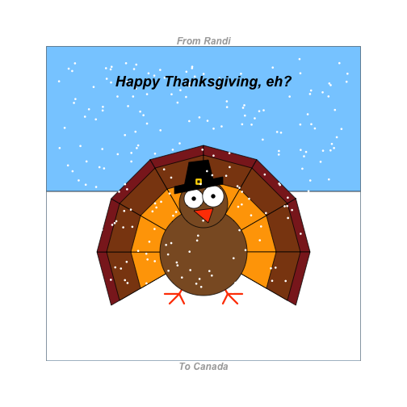
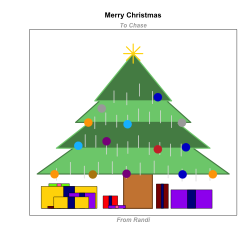
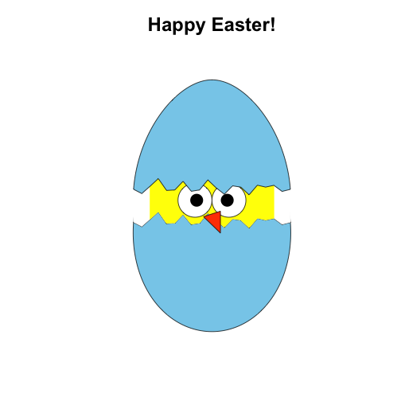

This is an R package for producing pretty caRds for special occasions. If you have the devtools package installed, you can install caRds from GitHub:
library(devtools)
install_github("rgriff23/caRds")
library(caRds)
TurkeyDay creates a Thanksgiving turkey:
TurkeyDay(from = "Randi", to = "America")

Wish Canada a happy Canadian Thanksgiving with canadian = TRUE:
TurkeyDay(from = "Randi", to = "Canada", canadian = TRUE)

ChristmasTree generates a jolly tree with presents underneath:
ChristmasTree(from = "Randi", to = "Chase", numPresents = 10)

Add tinsel with tinsel = TRUE.
ChristmasTree(from = "Randi", to = "Chase", numPresents = 10, tinsel = TRUE)

OneThousandHearts sprinkles 1000 tiny hearts about a larger heart, creating negative heart space where a romantic message can be included. If you use the to argument to specify the recipient of your Valentine's Day caRd, a simple message will be generated automatically:
OneThousandHearts(to = "Samara")

Alternatively, use lines to include a personalized message up to 4 lines long:
OneThousandHearts(line1 = "Roses are red",
line2 = "Violets are blue",
line3 = "If you were a Pokemon",
line4 = "I would choose you!")

EasterEgg lays an egg of any color with a baby chicken inside:
EasterEgg(shell = "skyblue")
